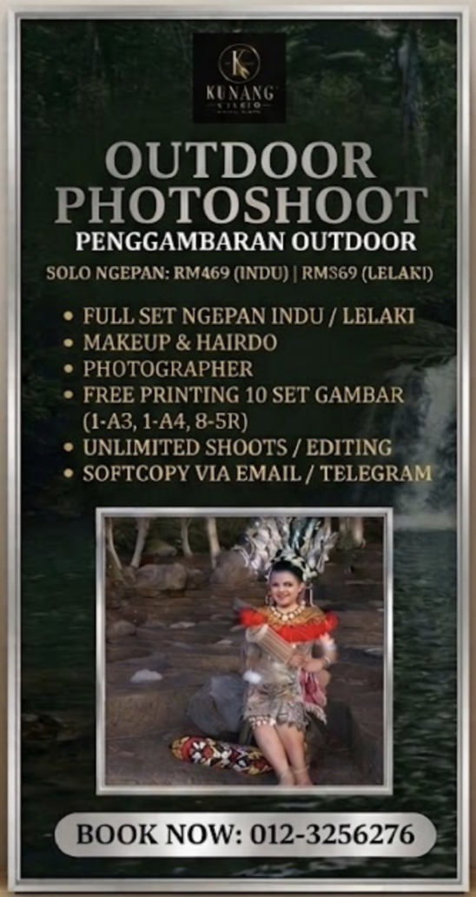

BENGKEL · WORKSHOP

Bengkel kraf tangan tradisional untuk belajar, mencuba dan berkarya. Traditional handicraft workshops to learn, create and explore.
Pertanyaan / Enquire ↗PERKHIDMATAN · SERVICES
Sesi foto tradisional dan bengkel kemahiran yang menghubungkan anda dengan budaya.Traditional photography sessions and skills workshops that connect you with culture.
JENIS PERKHIDMATAN · WHAT WE OFFER
BENGKEL · WORKSHOP
Bengkel kraf tangan tradisional untuk belajar, mencuba dan berkarya. Traditional handicraft workshops to learn, create and explore.
Pertanyaan / Enquire ↗MUA · MAKEUP ARTIST

Solekan dan dandanan untuk menyerlahkan gaya anda. Makeup and styling to bring out your best look.
Pertanyaan / Enquire ↗PHOTOSHOOT DALAMAN · INDOOR

Sesi foto dalam studio dengan suasana yang selesa. Comfortable indoor studio sessions for timeless portraits.
Pertanyaan / Enquire ↗PHOTOSHOOT LUARAN · OUTDOOR

Sesi foto luaran dengan latar alam dan budaya Sarawak. Outdoor sessions inspired by Sarawak's nature and culture.
Pertanyaan / Enquire ↗MAJLIS PERKAHWINAN · WEDDING RECEPTION

Pakej perkahwinan untuk meraikan hari istimewa anda. Wedding packages to celebrate your special day.
Pertanyaan / Enquire ↗PEMERKASAAN KOMUNITI · COMMUNITY EMPOWERMENT
Modul praktikal merangkumi manik, sulaman cengkerang burie dan anyaman. Terbuka kepada individu, institusi pendidikan serta penganjur program korporat.Practical modules cover beadwork, burie shell embroidery and weaving. Open to individuals, educational institutions and corporate programme organisers.